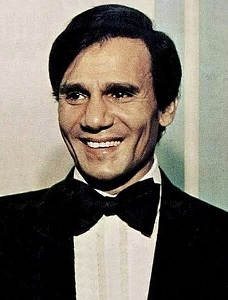

| Amr Diab (Arabic: عمرو دياب, IPA: [ˈʕɑmɾe deˈjæːb]; born on 11 October 1961) is an Egyptian singer, composer and actor.[1] He has established himself as a globally acclaimed recording artist and author.[2] He is a Guinness World Record holder, the best selling Middle Eastern artist, a seven-times winner of World Music Awards and five-times winner of Platinum Records. | Adel Emam (Arabic: عادل إمام; born 17 May 1940 is an Egyptian film, television, and stage actor.[1] He is primarily a comedian, but he has starred in more serious works and, combined comedy with romance especially in his earlier films, which included My Wife, the Director General, My Wife's Dignity and My Wife's Goblin starring Salah Zulfikar and Shadia. | ||||||
| Bassem Raafat Mohamed Youssef (Arabic: باسم رأفت محمد يوسف, IPA: [ˈbæːsem ˈɾɑʔfɑt mæˈħæmmæd ˈjuːsef]; born 21 March 1974) is an Egyptian comedian, writer, producer, surgeon, doctor, media critic, and television host, who hosted El-Bernameg (The Show), a satirical news program, from 2011 to 2014. The press has compared Youssef with American comedian Jon Stewart, whose satire program The Daily Show inspired Youssef to begin his career.[1][2][3] In 2013, he was named as one of the "100 most influential people in the world" by Time magazine.[4] Youssef's current projects are Tickling Giants, The Democracy Handbook, and Revolution For Dummies. | Daniel Wroughton Craig CMG (born 2 March 1968) is an English actor who gained international fame by playing the fictional secret agent James Bond for five installments in the film series, from Casino Royale (2006) up to No Time to Die (2021) | ||||||
| Mohamed Mohamed Mohamed Aboutrika (Arabic: محمد محمد محمد أبوتريكة (repeated three times); born 7 November 1978) is an Egyptian retired professional footballer who played as an attacking midfielder and a forward. He came second in the African Footballer of the Year award in 2008 after Emmanuel Adebayor, and was one of five nominees for the 2006 award, and one of the ten nominated for the 2013 award. | Abdel Halim Ali Shabana (Arabic: عبد الحليم علي شبانة), commonly known as Abdel Halim Hafez (Arabic: عبد الحليم حافظ,Egyptian Arabic pronunciation: [ʕæbd el ħæliːm ħɑːfɪzˤ]) (June 21, 1929 – March 30, 1977),[1] was an Egyptian singer, actor, conductor, businessman, music teacher and film producer.[2][1][3][4][5] He is considered to be one of the greatest Egyptian musicians along with Umm Kulthum, Mohamed Abdel Wahab, Mohamed Fawzi, and Shadia.[2][6] As his popularity grew, he was given the nickname 'el-Andaleeb el-Asmar (Arabic: العندليب الأسمر),[7][8][9] meaning The Dark-Skinned Nightingale.[10] To date, he has sold over 80 million records. |  |